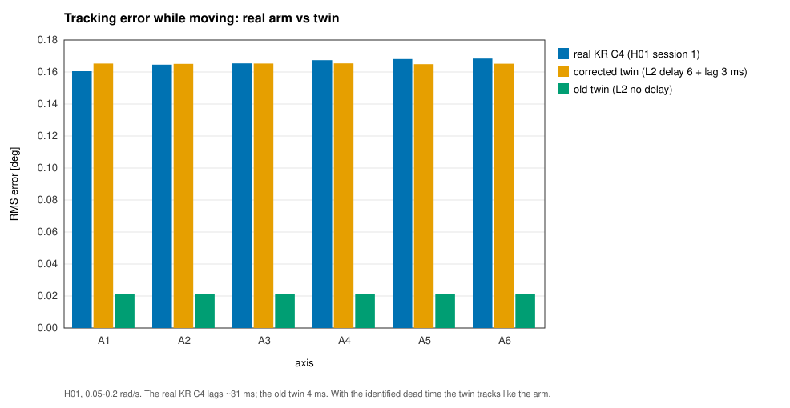
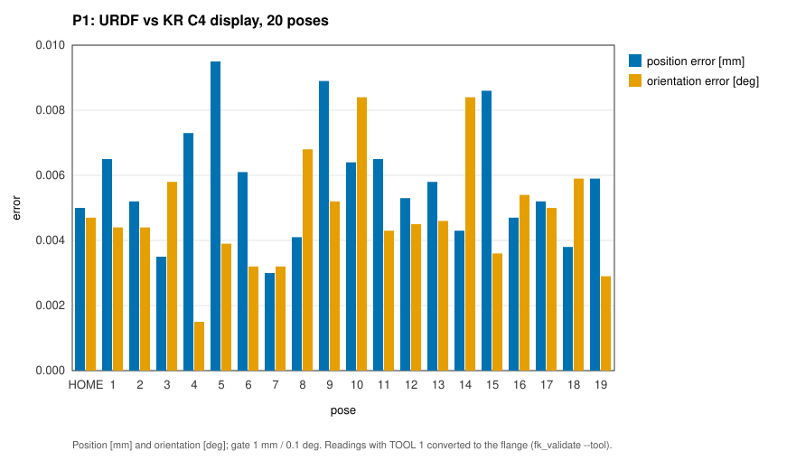

Samarth Bankar · Ahmedabad University robotics lab · status of 9 November 2026
A ROS 2 (Humble) cell for a KUKA KR 3 R540 industrial arm and its KR C4 controller, built so that the same application code runs on four levels by changing one launch argument: a mock arm (L0), Gazebo physics (L1), a simulator of the controller's RSI real-time protocol (L2) and the real controller (L3). Every motion is gated by a safety supervisor, every run is recorded and filed with the commit that produced it. All code is C++ and C.
| Level | Status |
|---|---|
| L0 mock arm | done: pick-and-place, palletizing, conveyor picking, welding, dispensing, teleoperation |
| L1 Gazebo physics | done: the same applications with parts as physical bodies; explicit servo model |
| L2 RSI protocol | done: own real-time protocol driver against a controller simulator, 4 ms cycle, fault handling |
| L3 real controller | running: the real controller in the loop, first motion, fault stops on the real arm, automatic-mode data campaigns behind the cell's safeguard |
| L4 real gripper | next: gripper selection and integration |
The real controller ran in the loop for the first time: first with the operator holding the enabling switch, then in automatic mode behind the cell's safety guard, with the arm driven only by small real-time corrections from the cell computer inside a limited range around its home position.
| Test | Result |
|---|---|
| robot model vs the controller's own position display, 20 poses | 0.009 mm, 0.008° (requirement 1 mm, 0.1°) |
| moves driven from the cell computer | about 760, every one within 0.0021° of its target |
| real-time packets exchanged (4 ms cycle) | about 830 000, none missed |
| stop after an operator disarm, real arm | 34 ms at 0.05 rad/s, 56 ms at 0.2 rad/s |
| silent software detected and stopped, real arm | 0.10–0.12 s, every time |


Simulation found the problem that would have stopped the first real session: the 1 kHz control loop silently ran on a fixed 4 ms grid, and with a controller clock only 50 ppm off, the real-time link failed after 30 s. It was fixed and proven in simulation the night before.
Four simulation campaigns; the latest (C04) ran every application and two injected faults on all three simulated levels on one software version: 23 of 23 runs valid.
| L0 mock | L1 physics | L2 protocol | |
|---|---|---|---|
| randomized picks | 50/50 | 50/50 (+50/50) | 50/50 |
| mean pick cycle | 12.61 s | 12.60 s | 12.62 s |
| pallet blocks, conveyor parts | 8/8, 8/8 | 8/8, 8/8 | 8/8, 8/8 |
| weld path deviation (RMS) | ≤ 0.0021 mm | ≤ 0.0018 mm | ≤ 0.0020 mm |
| stop after an operator disarm (max) | 12 ms | 8 ms | 13 ms |
| silent driver detected after | 0.51 s | 0.51 s | 0.51 s |